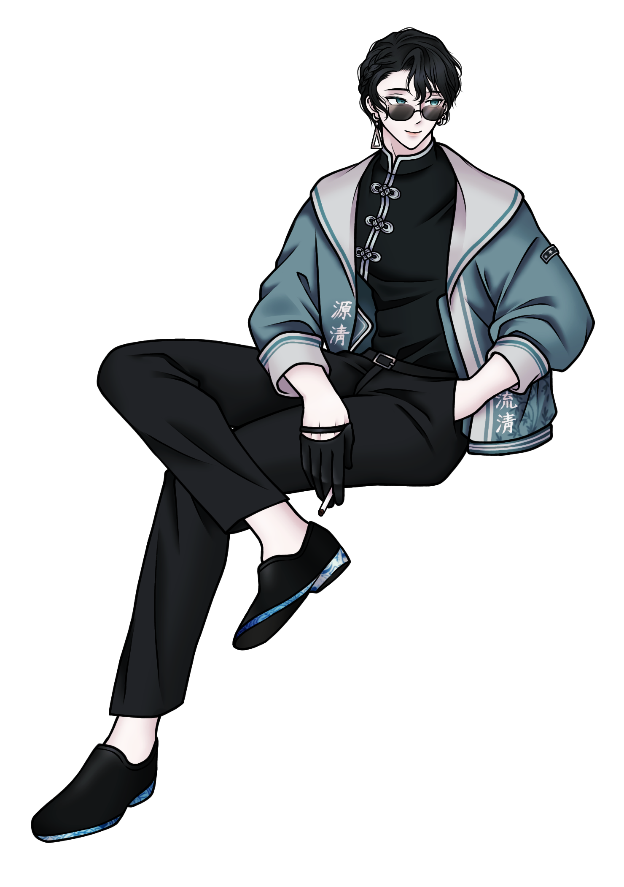

|
鴞藟｜Xiāolěi
샤오레이
|
|
|  | |
| 등장 작품 |
The Back street: Omertà The Back street: Vendetta |
|---|---|
| 소속 | 클로 소사이어티 하르모니아 (Harmonia) 화조방 (化雕幇) |
| 직책 | 화조방 간부 클로 소사이어티 협상자 No.21 |
| 나이 | 30세 → 33세 |
| 성별 | 남성 |
| 신체 | 188cm / 86kg |
| 좋아하는 것 | 동양화(東洋畫), 증류주, 우롱차, 튀긴 음식 |
| 싫어하는 것 | 너무 밝은 장소, 귀찮은 일, 무능한 부하, 구역 내 소란 |
| 취미 | 미술품 감상, 독서, 클래식 보드게임 |
The Back street 의 등장인물이자 주요 NPC. 클로 소사이어티의 협상자이자 화조방의 간부.
시나리오/오픈 월드에서 조언자이자 미션을 주는 역할로 등장한다.
클로 소사이어티 스토리인 3챕터 ‘Nest of Raptors’ 이후부터 등장.
애션 패밀리의 콘실리에레인 고드윈의 명령으로, 클로 소사이어티 수뇌부의 ‘Neil’을 찾아온 플레이어의 신변을 잠시 보호해주는 대신 자잘한 임무를 지시한다.
1~2챕터에서 플레이어가 쌓아온 평판과 3챕터 이후 선택지에 따라 행동이 미세하게 변화한다. 평판과 신뢰도/충성도에 문제가 없다면 조언자로 계속 존재하나, 일정 이상으로 수치가 떨어질 경우 플레이어와의 상호작용과 개인적인 대화가 줄어든다.
평판 수치가 일정 이상 떨어지면 플레이어는 센트럴 로드로부터 스카우트[1]를 제의받으며, ‘화조방 2층 집무실 다섯 번째 서랍의 검은 파일’을 가져오라는 요청을 받는다. 해당 미션을 수락할 경우 ‘은혜를 잊은 자’ 엔딩으로 진입하며, 샤오레이에게서 더 이상 미션을 받을 수 없다.
이후 애션 패밀리의 처형장으로 이송되는 주인공 앞에 나타나 플레이어를 싸늘하게 조롱한다. 애션 패밀리에 주인공의 배신을 전달한 건 닐이지만, 배신의 단초를 처음 발견하여 클로 소사이어티의 상부에 고변한 것은 샤오레이로 추측할 수 있다.
메인 NPC로 격상하며 비중이 대폭 늘어났다. 1편에서는 화조방 간부로서의 모습이 부각되었다면, 2편에서는 협상자로서의 모습이 더 많이 부각된다.
센트럴 로드 견제를 위해 애션 패밀리와 일시적으로 협력하게 된 클로 소사이어티의 의장 ‘Chair’의 지시로, ‘라이트하우스’의 리더와 협상하며 첫 등장한다.[2] 이후로 등장하는 장면들 역시 대부분 협상과 교섭에 관련된 미션들.
3챕터 진입 이후 동북부 구획이 센트럴 로드의 침략을 받게 되며, 상부의 명령에 저격수로 차출되어 플레이어와 함께 미션에 참여한다. 미션의 제목은 ‘One shot’으로, 타 미션과 달리 사격의 정밀도와 탄환 사용 개수가 미션 성패에 영향을 끼친다.
해당 미션 이후 클로 소사이어티와 애션 패밀리 수뇌부의 회담에 참석한다. 여담으로 애션 패밀리가 ‘센트럴 로드에서 올빼미를 최우선 암살 대상 목록에 올렸다’는 정보를 공유하는데, 회담에 참여한 모두가 ‘그럴 것 같았다’는 듯 심드렁하게 반응하는 소소한 개그 씬이 있다.
“암살 리스트에 안 올렸으면 그게 더 이상하다”는 샤오레이의 반응이 화룡점정.
애션 패밀리 위주로 스토리가 진행되는 1편과 달리, 클로 소사이어티 개별 엔딩 진행이 가능하다.
평판과 충성도/신뢰도 등의 세부사항에 따라 일선 책임자(Silver bullet) / 협상자(Crossway) / 협력자(Cooperation) 엔딩으로 나뉜다. 작중 내내 보이던 무덤덤한 협상자의 모습과 달리 유들유들해진 샤오레이의 대사를 들을 수 있다.
평판 수치가 일정 이상 떨어진 플레이어에게 배신 제의가 들어오는 것은 1편과 동일.
5챕터 ‘Ashes to ashes’에서 클로 소사이어티의 내부 회의록을 빼돌릴 경우, 즉시 ‘Owl's eye’ 엔딩으로 진입한다. 이후 회의록을 센트럴 로드 측에 전달하려던 주인공의 뒤를 은밀히 밟은 샤오레이가 플레이어를 사살한다.
유일하게 샤오레이가 처형자로 나오는 엔딩이다.
마피아치고는 꽤 준수한 미청년. 작중 샤오레이에 대한 언급에서 외모에 대한 가십[3]을 종종 들을 수 있다. 나이에 비해 조금 젊어 보이는 외모라고.
소지한 라이터나 리볼버, 총알, 펜, 금속 퍼즐 등을 자주 만지작거린다. 손이 심심한 것을 오래 참지 못한다고 한다. 그래서인지 종이접기에 능숙한 듯. 특히 학은 정말 잘 접으며, 가끔 테이블 위에 종이학 한두 개가 올려져 있다. 말버릇은 가까운 사람을 종종 ‘형제’[4]라 칭하는 것. 뒷골목에서의 생존 방식이라나, 뭐라나.
의외로 누워 있기 말고 소소한 취미가 많은 편. 특히 미술품이나 회화 구경을 좋아한다. 선호하는 종류는 동양화. 다른 취미는 마작, 카드 등의 클래식 보드게임과 독서, 느긋하게 술이나 차 한 잔 마시는 일 정도.
밤눈이 매우 밝아 야간에도 길을 잘 찾으며, 어둠 속에서도 사격이 꽤 능숙하다. 하지만 그만큼 주변이 밝으면 금세 눈이 피로해진다고. 환한 곳에서 잠깐 선글라스를 고쳐 쓸 때면 인상을 찡그리는 표정 변화가 보인다.
담배를 태우는 모션이 많다. 헤비스모커.
새까만 흑발에 채도 낮은 녹회색 눈동자, 오른쪽 눈 옆에 찍힌 눈물점이 특징. 반쯤 넘긴 오른쪽 옆머리가 가볍게 땋아져 있다. 갸름한 눈매에, 무표정하게 있을 때는 다소 날선 느낌.
기본적인 복장은 탕좡(唐裝) 또는 창산(長衫) 형태의 검은 상의와 바지, 흰 글씨로 ‘원청유청’[5]이라 써 있는 탁한 청록색 외투. 다만 2편인 벤데타에서는 협상자의 모습으로 자주 등장하며 정장 차림이 많이 보여졌다.
하프 팜 형태의 검은 가죽 반장갑과 선글라스[6], 메탈 재질의 귀걸이[7]가 특징이다.
탄탄한 체형의 소유자인데다, 워낙 장신이라 비율이 좋은 편. 그러나 반팔은 거의 입지 않는 듯하다.
가벼운 웃음과 농담, 실없는 소리로 모든 일을 넘겨버리는 성격. 기본적으로 유들유들하고 태연해서인지, 어지간한 일에는 이렇다 할 반응조차 않는다.[8] 여기에 극강의 귀차니즘이 결합되다 보니, 나른하고 무기력한 모습이 많이 보이는 편이다. 외출 이벤트가 있는 다른 NPC들과 달리 늘 뤼화타운에서 마주할 수 있다. 대화 중 취미가 무엇이냐는 질문에 ‘누워 있기’라 대답할 정도. 간부는 대체 어떻게 해먹고 사는 건지 의문
스토리가 진행되며 진중하고 예리한 면모가 드러난다. 귀찮다는 말을 달고 사는 것과는 달리, 간부나 협상자로서의 품위 유지에 주의를 꽤나 기울이는 듯. 협상자라는 직책답게 기억력이 좋고 언변이 뛰어나다. 문학적인 표현이나 시구를 인용한다던가, 플레이어와의 대화를 한참 후에 다시 언급한다던가… 주변인들의 언급에 따르면 꽤나 품위 있는 말씨를 쓰는 편.
꽤 열렬한 독서광이며, 화조방 2층에 있는 개인 집무실과 1층 응접실에 많은 책이 채워져 있는 모습을 확인할 수 있다. 그러나 1층과 2층에 있는 책들은 3층 서재에 있는 권수의 절반도 안 된다고.
공식적으로 명시되어 있는 호불호 외에도 단것을 선호하지 않는 편인 듯하다.
이름인 ‘샤오레이’보다는 별명인 ‘올빼미’ 혹은 ‘21번 협상자’라는 명칭으로 더 자주 불린다.
서류상의 생일은 8월 6일. 탄생화는 능소화.[9] 그러나 실제 생월일은 아니며, 진짜 생일은 본인도 모른다고 한다.
성은 한(韓, Hán)으로, 풀네임은 샤오레이 한(鴞藟 韓). 2편에서 정확한 이름이 밝혀진다. 다만 본명은 아니라고.
영어 외에도 중국어, 약간의 일본어와 이탈리아어를 구사 가능한 것으로 보인다.
우호도가 ‘높음’을 초과하여 올라가지 않는 몇 안 되는 주요 NPC 중 하나.
작중에서 과거 서사가 거의 밝혀지지 않았으나, 행적을 추측해 볼 만한 몇 가지 이스터에그가 존재한다.
1편에서의 인기로 인해 2편에서의 분량이 대폭 늘어났다는 의혹 아닌 의혹이 있다.
플레이어에 대한 우호도가 높음 이상으로 올라가지 않는 점 때문에, 주인공의 2층 사무실 출입이 버그라는 루머가 잠시 돌았던 적이 있다.
2편 시나리오가 절반 이상 풀린 후에야 생일과 풀네임이 공개되었다. 다만 그조차 본명과 실제 생월일이 아니라는 정보에 소소한 원성을 산 모양.
[1] 작중에서 ‘배신 제의’를 뜻하는 마피아 은어. ↩
[2] 클로 소사이어티의 협상자들은 원칙적으로 내부 갈등의 중재만 도맡으나, 센트럴 로드의 북서부 침입이 위험 수위를 초과했다 판단하고 예외적으로 샤오레이를 파견했다. ↩
[3] 기생오라비처럼 생겼다거나, 낯짝은 반반하다거나… ↩
[4] 兄弟(xiōngdì). ↩
[5] 源淸流淸. “윗물이 맑으면 아랫물도 맑다”. 윗사람이 청렴하면 아랫사람도 청렴해짐. ↩
[6] 작중에서 벗는 모습을 거의 볼 수 없을 정도. 고쳐 쓰는 모션 정도는 존재한다. ↩
[7] 삼각형 모양 귀걸이가 대표적으로, 그 외에도 여러 디자인을 가지고 있다고. ↩
[8] 단적인 예로, 1편 3챕터에서 플레이어가 달고 온 스파이를 **사살한 직후에도** 별 동요 없는 모습을 보였다. ↩
[9] 꽃말은 '명예', '영광'. ↩
[10] 외관의 유사성으로 인해 여동생이라는 가설이 유력. ↩
이 문서는 팬메이드 자캐 문서이며, 실제로 존재하는 게임 및 웹사이트가 아닙니다.